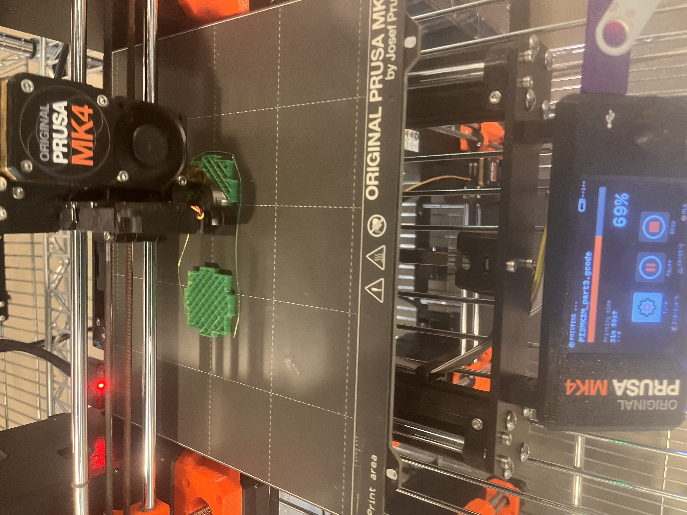
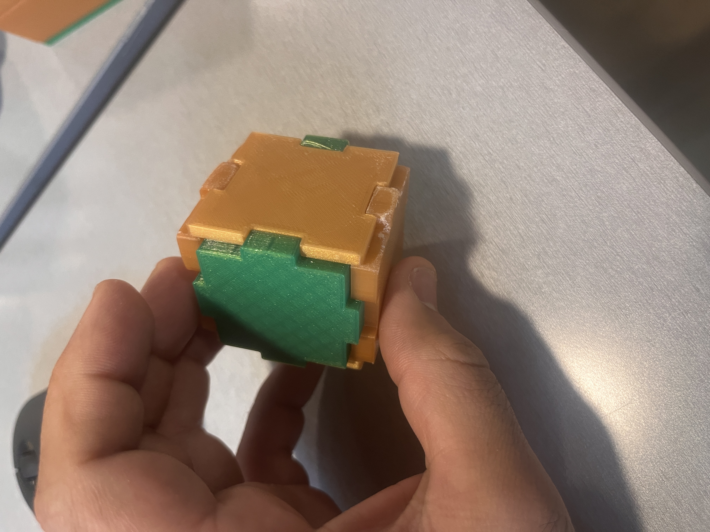
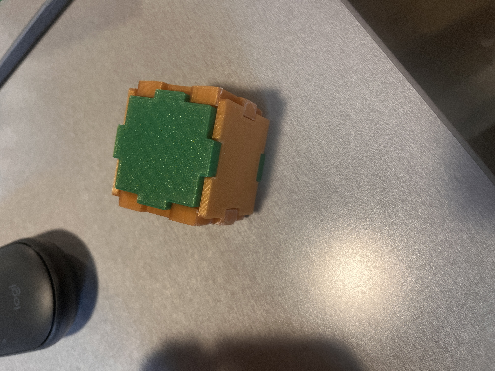

Chamfered Box with Sanded Edges
This box was successfully printed with chamfers to aid assembly. However, sanding was necessary to achieve the tight fit required to prevent leaks. The image below shows the final chamfered box after sanding.


Here are some images of the initial 3D print attempts which did not succeed. These failures were crucial [read extremey frustrating] in understanding the importance of precise measurements and tolerances.
This box was successfully printed with chamfers to aid assembly. However, sanding was necessary to achieve the tight fit required to prevent leaks. The image below shows the final chamfered box after sanding.
The final design consists of six separate faces that assemble to form a tight-fitting box, capable of holding fine substances like sugar without leaking. It is not perfect, but after printing parts together/seperately over 8 times- I decided that this was enough
  Over three days of 3D printing and multiple failures, I learned not only about the critical role of tolerances in manufacturing but also about perseverance and innovation in design. These lessons go beyond the workshop, emphasizing how small details can have big impacts in life and engineering. Google Drive link here has all the STL files relevant https://tinyurl.com/ycycrjnz